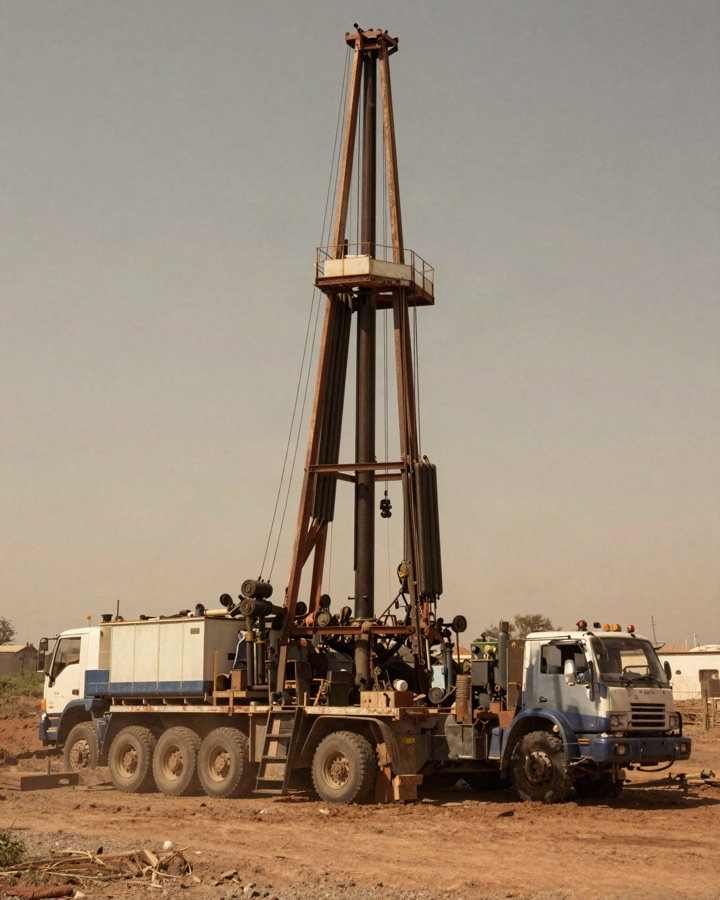
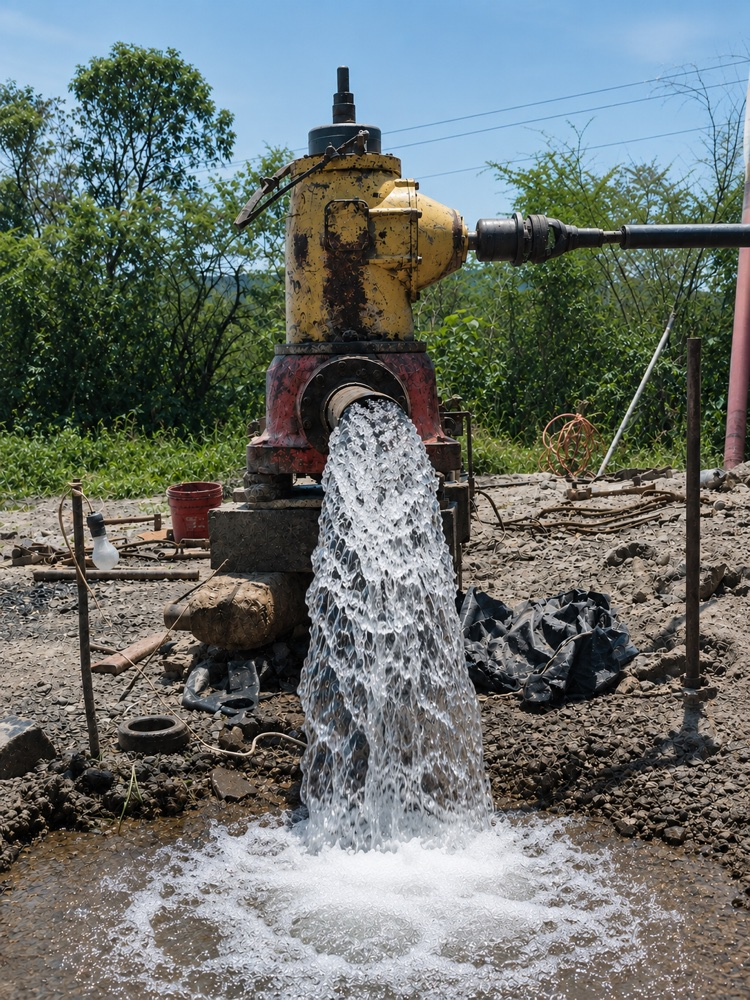
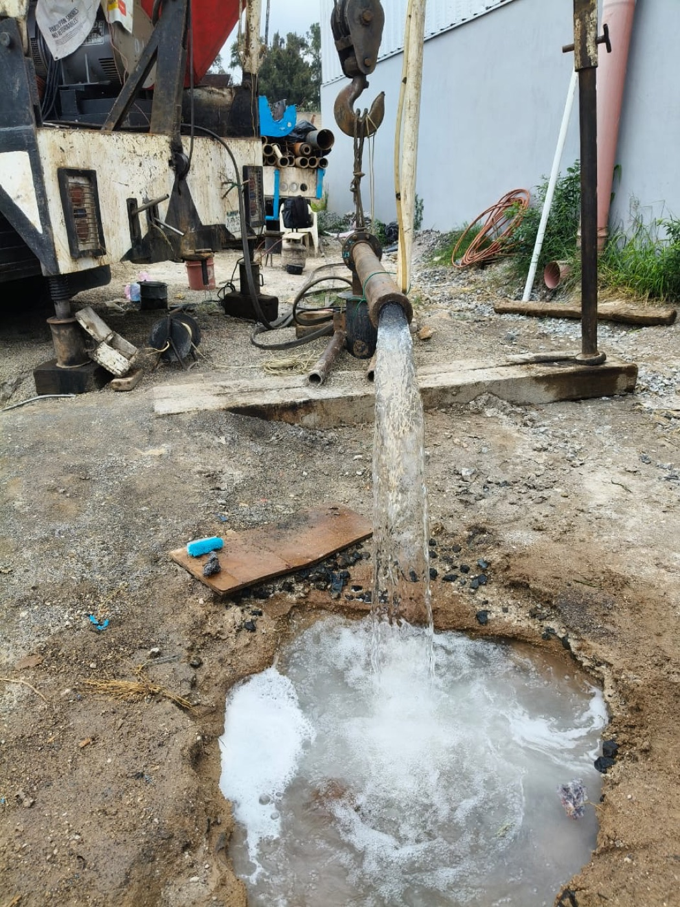

Perforación de pozos profundos
Realizamos trabajos de perforación orientados a la captación de agua subterránea, de acuerdo con las condiciones y objetivos de cada proyecto.
Proyectos de 180 a 425 m
Pozos de Agua Subterránea
Especialistas en perforación y equipamiento de pozos profundos, estudios hidráulicos y geohidrológicos, y diseño y construcción de obras hidráulicas.

Nivel del terreno
Cada proyecto atraviesa una secuencia distinta de estratos.
El estudio previo define dónde y hasta dónde perforar.
Experiencia documentada
Grupo Pepsico
Embotelladora Santorini,
Ixtlahuacán, Jalisco
IBM
Planta del Salto,
El Salto, Jalisco
Omnilife
Bajío,
Zapopan, Jalisco
Empaques Modernos
Planta del Salto,
El Salto, Jalisco
Gobierno del Estado de Nayarit
Tepic, Nayarit
H. Ayuntamiento de Sahuayo
Sahuayo, Michoacán
Servicios
Contamos con experiencia técnica para desarrollar proyectos relacionados con la captación, extracción y aprovechamiento de agua subterránea.
Realizamos trabajos de perforación orientados a la captación de agua subterránea, de acuerdo con las condiciones y objetivos de cada proyecto.
Proyectos de 180 a 425 m
Integramos el equipamiento necesario para la extracción y aprovechamiento del agua del pozo.
Gastos de 16 a 60 L/s
Realizamos estudios técnicos que permiten analizar las condiciones del sitio y apoyar la planeación de proyectos de agua subterránea.
Antes de perforar
Desarrollamos soluciones de infraestructura hidráulica relacionadas con las necesidades de cada proyecto.
En superficie
Te contactamos para orientarte sobre tu proyecto. Sin compromiso.
Experiencia
Nuestra experiencia se ha desarrollado alrededor de la ingeniería hidráulica, la perforación de pozos y el aprovechamiento de agua subterránea.
El Ing. Marcial Pérez Palomera, Gerente General, es Ingeniero Civil por la Universidad de Guadalajara y cuenta con una Especialidad en Obras Hidráulicas por la Facultad de Ingeniería de la UNAM.
Su trayectoria profesional documentada incluye actividades en obra hidráulica, aguas superficiales, aguas subterráneas, administración de proyectos y dirección general.

Trayectoria
Trayectoria profesional documentada del Ing. Marcial Pérez Palomera, Gerente General.
1973–1974
Secretaría de Recursos Hidráulicos.
1978–1984
Ingeniero de gabinete y campo en el área de aguas superficiales, federales y aguas subterráneas.
1986–1988
Coordinador de Administración de Aguas Subterráneas.
1989–1995
Jefe de Unidad de Aguas Subterráneas.
1996–2004
Gerente General — empresa dedicada a hidroconstrucción y consultoría, según el CV histórico.
Desde octubre
de 2004
Gerente General de la empresa, de acuerdo con el CV histórico proporcionado.
Acuífero alcanzado
La altura de cada estrato es proporcional a la duración de la etapa.
Diferenciadores
Un pozo mal decidido cuesta caro. Por eso trabajamos con un enfoque completo: primero evaluamos las condiciones del sitio con estudios hidráulicos y geohidrológicos, luego perforamos y equipamos, y entregamos el sistema listo para operar. No solo perforamos: resolvemos el aprovechamiento del agua de principio a fin.
Solicitar cotizaciónNo somos una constructora que también hace pozos. Nuestra experiencia se ha construido durante décadas alrededor de una sola cosa: el agua subterránea. Esa especialización — respaldada por proyectos para gobierno, industria y clientes privados — es lo que nos distingue de un proveedor general.
Conocer nuestra experienciaProceso
Cinco etapas, de la superficie al acuífero.
01
Analizamos ubicación, objetivo, uso previsto del agua y necesidades generales.
02
Determinamos los estudios y trabajos técnicos necesarios.
03
Ejecutamos la perforación conforme al proyecto y a las condiciones encontradas.
04
Integramos el equipamiento para la extracción y aprovechamiento del agua.
05
Proyectos
La documentación histórica de la empresa registra trabajos para organismos gubernamentales, empresas industriales, desarrolladores y clientes privados en diferentes ubicaciones.
Grupo Pepsico, S.A. de C.V.
Embotelladora Santorini,
Ixtlahuacán, Jalisco
IBM
Planta del Salto,
El Salto, Jalisco
Omnilife
Bajío,
Zapopan, Jalisco
Gobierno Estatal de Nayarit
Tepic, Nayarit
H. Ayuntamiento de Sahuayo
Sahuayo, Michoacán
Empaques Modernos
Planta del Salto,
El Salto, Jalisco
GIG
Fraccionamiento Casa Fuerte,
Tlajomulco de Zúñiga, Jalisco
La documentación proporcionada registra proyectos con profundidades aproximadas de 180 a 425 metros y gastos aproximados de 16 a 60 litros por segundo.
Galería
Torres de perforación, maquinaria, equipo de campo y trabajos realizados.

Contacto
¿Necesitas perforar un pozo, evaluar una fuente de agua subterránea o desarrollar una obra hidráulica? Compártenos los datos de tu proyecto y nos pondremos en contacto contigo.
Sin costo inicial
Nos cuentas ubicación y objetivo; te orientamos sobre estudios y viabilidad antes de comprometer nada.